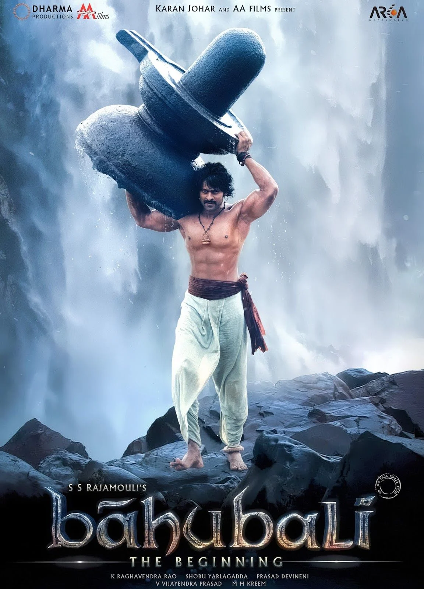

I'm Tejo Lakshmi Tata, and I was born and raised in Bapatla, which is well-known for having
Suryalanka Beach. I attended Gems High School and Graduated in 2021 from Vignan's
Foundation for Science, Technology, and Research. I enjoy playing video games and am
really interested in yoga when I have free time.
A visual treat.If a person is bit of into movies, I am sure that person heard about Baahubali couple of years back. It took almost four years to complete the first part. Hero Prabhas had completely dedicated his time to this movie and no movie after his super successful movie Mirchi. Same is true from S.S Rajamouly, after his last non-conventional movie Eega. So obviously there are high expectations 3 years of sheer hard-work of many people who have worked their hearts out for this.
The list of popular locations in a few cities, together with the amount of time spend there, is shown in the table below.
| Name of a City | Location | Visting Time |
|---|---|---|
| Kolkata | Cable Bridge | 1 hour |
| Bangalore | Thottikollu Water Falls | 6 hours |
| Vishakapatanam | Vanajangi Hills | 4 hours |
| Ahmedabad | Statue of Unity | 2 hours |
How to check if a string starts with a specified string?Source Link
function startsWith($string, $startString) {$len = strlen($startString);return (substr($string, 0, $len) === $startString);}echo startsWith("cat", "c");echo startsWith("dog", "x");?>